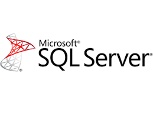

4 DATABASE TERBAIK DI TAHUN 2021
Assalamualaikum wr.wb. Hallo kawan-kawan sekalian apa kabar, Semoga kawan-kawan sekalian selalu sehat dan dalam lindungan Allah Swt amiinn ya robbal alamin.
Oke, balik lagi bersama saya Adly Ansari NasutioN. Kali ini saya akan men – share sedikit Materi Tentang 4 DATABASE TERBAIK DI TAHUN 2021.
Perlunya Web Server atau aplikasi Database untuk menunjang kinerja aplikasi kita ataupun website yang kita buat, agar lebih optimal dan tersusun dengan rapi.
Dari pada kawan-kawan menunggu terlalu lama, langsung saja simak penjelasan dibawah ini ya kawan-kawan. Microsoft SQL Server adalah salah satu software jenis Relational Database Management System (RDBMS) yang cukup sering digunakan. Sesuai namanya, Software ini dikembangkan oleh perusahaan besar Microsoft dan cukup scalable. Maksudnya Kawan-kawan adalah untuk pemakaiannya Microsoft SQL Server bisa dimana-mana dari laptop manapun, ke jaringan server cloud dan lain sebagainya. Namun istilah scalable ini tetap saja harus memperhatikan persyaratan hardware maupun software.
MySQL adalah Sebuah database management System( manajemen Basis data) menggunakan perintah dasar SQL (Structured Query Language) Yang cukup terkenal. Database management system (DBMS) MySQL multi pengguna dan multi alur juga.
Oracle adalah sebuah software untuk sistem management database relasional ( RDBMS) dan bukan software untuk sistem management database biasa (DBMS). Oracle diproduksikan dan dipasarkan oleh perusahaan pembuat software terkemuka di dunia, yaitu Oracle Corporation yang bermarkas di Redmond City, California.
OracleOracle merupakan software yang pertama kali melibatkan SQL di dalam pengelolaan database. adanya SQL ini membuat pengguna komputer lain dapat mengakses informasi dari dalam database komputer yang menggunakan sistem RDBMS dengan mudah dan cepat.
PostgreSQL adalah sistem management basis data relasional open source yang dikembangkan. PostgreSQL merupakan software yang berjalan pada paltform Linux dan berfungsi dengan objek sebagai komponen relasional dalam sistem management basis data.
Nah mungkin itulah Sedikit materi tentang 4 DATABASE TERBAIK DI TAHUN 2021 , kurang lebih nya saya mohon maaf. Jika kawan-kawan ingin berikan pendapat atau komentar , silahkan tulis komentar serta pendapat kawan-kawan dikolom komentar dibawah ini.
Saya ucapkan terima kasih dan saya ahkiri Assalamualaikum.Wr.wb.
Info lebih lanjut->
Hubungi Saya
1.Microsoft SQL Server

2.MySQL

3.Oracle

4.PostgreSQL